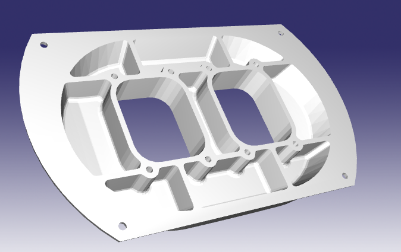
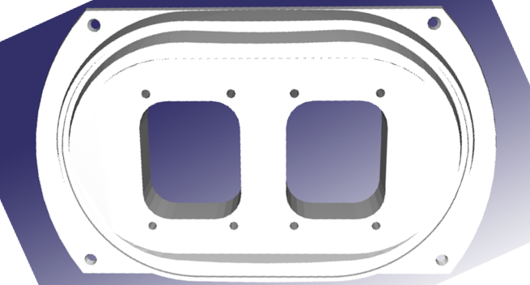
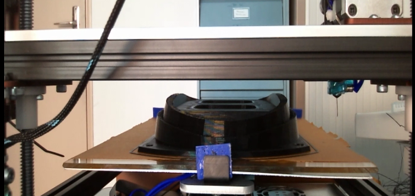
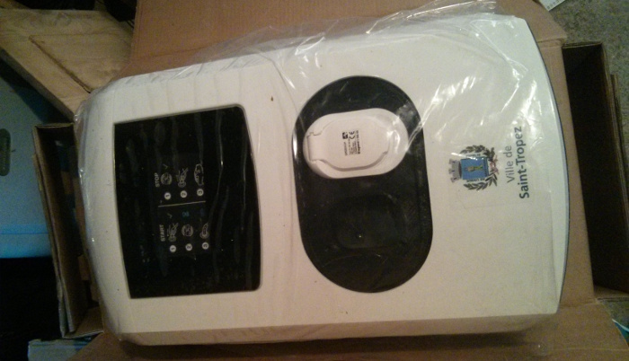
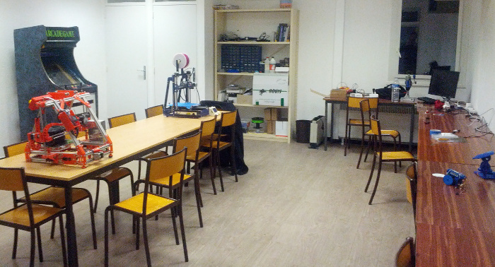

Soirée #geekbidouille de Décembre
Sébastien NEDJAR
Soirée #geekbidouille de Décembre

- Actualités
- Présentation du projet des étudiants de la Mini-Entreprise du lycée Cézanne
- Présentation du futur local rue des bœufs et réflexion sur la future offre de formation du L.A.B par Guy
- Jonathan et Nicolas nous présenteront la borne d’Arcade du L.A.B qui fonctionne grâce à un Arduino Leonardo et un Raspberry Pi
- Démonstration d’un outil de développement collaboratif pour coder sur son Arduino à partir de la plateforme en ligne Codebender.
- Organisation de la nuit de l’info
- Impression d’un prototype pour la PME Plus de borne.
- Subventions ?
- Acquisition des machines.
- Ouverture de notre local.
- Une soirée pour que les étudiants puissent relever les défis poser par les industriels.
- Les imprimantes du L.A.B ont aidé à financer l’événement.
- Une soirée avec plusieurs conférences dont une sur Nao faite par Blandine Bourgois.
- Plus de 200 étudiants et environs 50 personnes ont participé à la soirée.
Prototype pour la PME Plus de borne
- Impression d’une pièce pour adapter les bornes de recharge pour véhicules électriques de la norme européenne à la norme française.
- La pièce faisait 26x15x10cm et à mis 23h d’impression.
Prototype pour la PME Plus de borne

Prototype pour la PME Plus de borne

Prototype pour la PME Plus de borne

Prototype pour la PME Plus de borne

- Notre projet n’a pas été retenu par la DGCIS
- Les 14 retenus sont uniquement axés services aux entreprises.
- Pour autant notre projet est toujours sur les rails grâce au soutien de la CPA.
- D’ici Avril nous devrions recevoir la première vague de matériel (Fraiseuses, Plotter de découpe, Découpe Laser, Station de travail, …).
- Dès janvier nous travaillons à l’élaboration du cahier des charges pour que les marchés soient lancés au plus tôt.
- Plusieurs machines et outils seront mis à disposition des associations amis pour permettre
un large accès à la fabrication numérique.
Ouverture de notre local à l’IUT.

Ouverture de notre local à l’IUT.
- Les travaux de remise en état de la salle attribué au Fab Lab sont terminé.
- Dès la rentrée nous pourrons commencer les permanences pour accueillir les porteurs de projet.
- Permanences de 17h à 20h.
- Le reste du temps le Fab Lab pourra être utilisé comme un espace de co-making.
Ouverture de notre local à l’IUT.
- Ouverture de la Fabulerie à Marseille le 9 Janvier.
- Travail sur l’aménagement des locaux rue des bœufs.
- Début de l’action de formation Impression 3D pour les ERIC du Pays d’Aix.